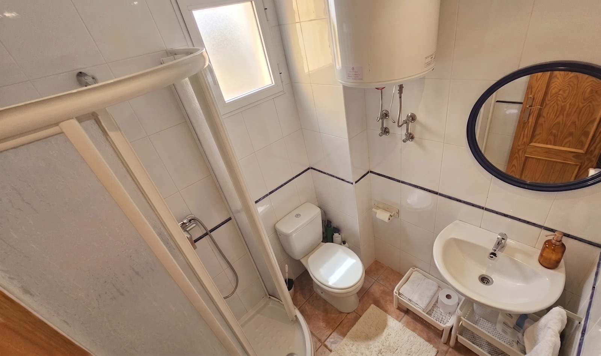

Un refugio de luz y serenidad en Burriana.
Descubre la armonía perfecta entre el confort moderno y la brisa del Mediterráneo.
Descubre la armonía perfecta entre el confort moderno y la brisa del Mediterráneo.


Una cocina equipada con todo lo necesario para disfrutar de los sabores locales de Burriana en un ambiente de total modernidad y limpieza.

Baños diseñados como spas privados, donde la iluminación y la calidad de los materiales invitan a la desconexión total.

Un espacio abierto para disfrutar de los atardeceres de Burriana, leer un libro o simplemente respirar el aire del Mediterráneo.